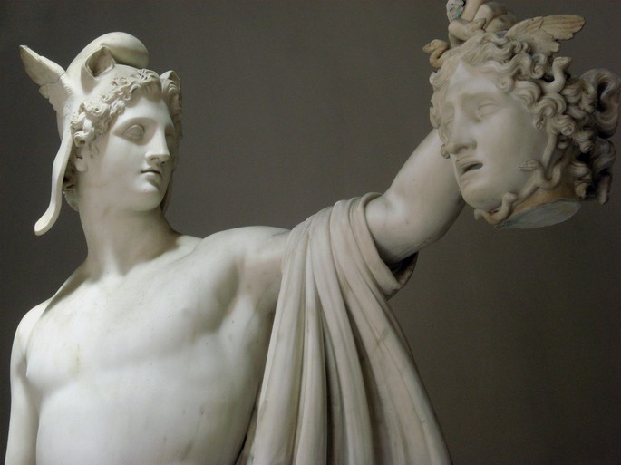
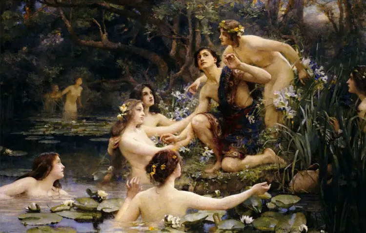
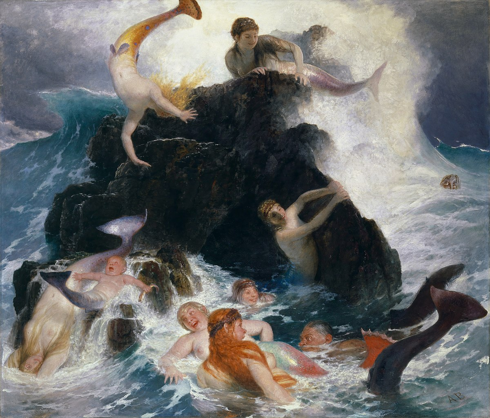
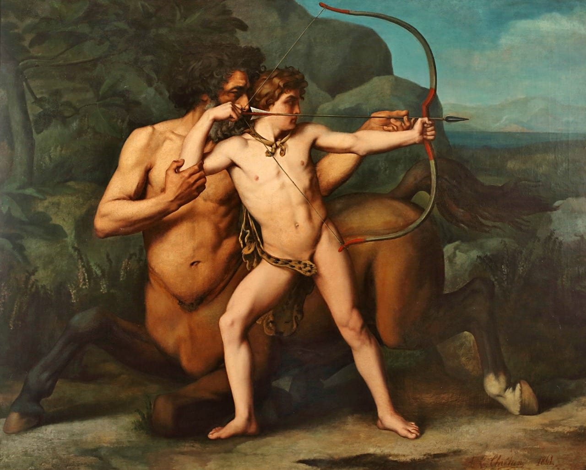
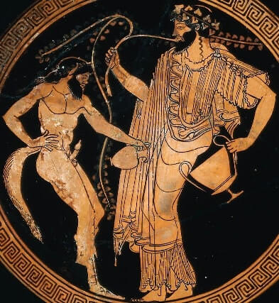
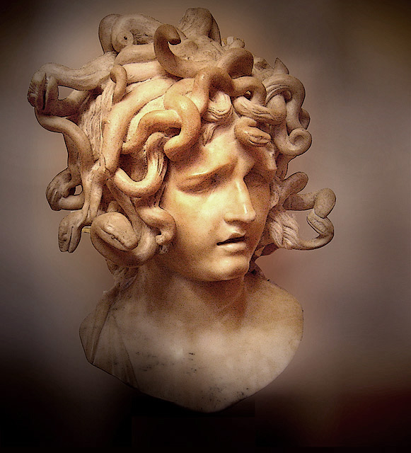
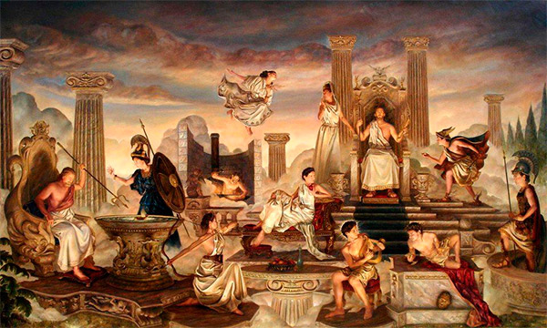
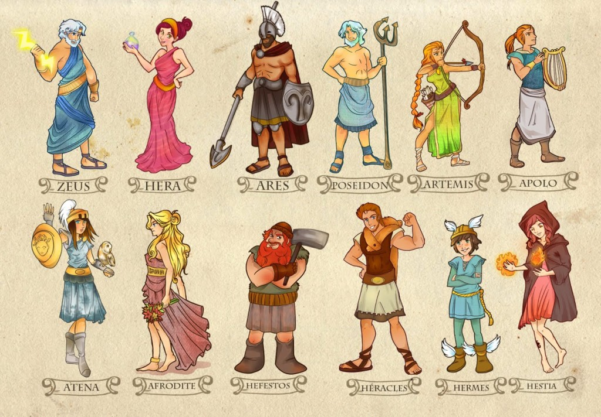

Sobre
A Mitologia Grega reúne um conjunto de lendas e mitos que foram criados pelos gregos na antiguidade.
A Mitologia Grega originou-se da união das mitologias dórica e micênica. Seu desenvolvimento ocorreu por volta de 700 a. C.
O objetivo principal era de explicar alguns fatos, como a origem da vida, a vida após a morte, ou até mesmo os fenômenos da natureza.
Assim, a criação das narrativas fantásticas que engobam a mitologia grega foi a maneira encontrada pelos gregos para preservarem sua história.
É importante ressaltar que a civilização grega estava baseada numa religião politeísta, ou seja, eles cultuavam diversos deuses.
Hesíodo e Homero
Pode-se dizer que na Grécia Antiga a religião era politeísta, pois os gregos adoravam a vários deuses.
Não existem escrituras sagradas (como a Bíblia para os cristãos) a respeito da Mitologia Grega.
As principais fontes a esse respeito foram escritas no século VIII a.C. por Hesíodo (Teogonia), e por Homero (Ilíada e Odisséia).
Na Teogonia são tratadas a origem e a história dos deuses gregos.
Nas narrativas Ilíada e Odisséia são descritos os grandes acontecimentos envolvendo heróis e deuses.
Seres Mitológicos
A mitologia grega é permeada por inúmeras figuras mitológicas.
-
Heróis
Considerados os semideuses, ou seja, filhos de deuses com humanos. Dos heróis gregos destacam-se: Perseu, Teseu e Belerofonte.
 -
Ninfas
Figuras mitológicas femininas sempre lindas e alegres e que cuidavam das florestas. Por exemplo, as Alseídes, ninfas das flores e bosques; as Dríades, ninfas dos carvalhos; as Nereidas, ninfas da água.
 -
Sereias
Figuras femininas que cantavam e possuíam corpo de peixe. Podiam ser representadas com asas e cabeça e busto de mulher, tal qual as Harpias.
 -
Centauros
Seres híbridos e fortes com corpo metade humano e metade cavalo. Destaca-se Quíron, amigo de Herácles criado por Cronos.
 -
Sátiros
Possuíam um corpo de homem com patas de bode e chifres. São correspondentes aos faunos da mitologia romana. Dos sátiros gregos destaca-se: Pã, o Deus dos bosques.
 -
Górgonas
Figuras femininas que possuíam cabelos de serpentes, por exemplo, a Medusa. Seus corpos eram cobertos por escamas, tinham braços de metal e dentes grandes e pontiagudos.

Deuses Gregos
Eram figuras imortais e antropomórficas. Ou seja, eram deuses com formas humanas e que também possuíam sentimentos humanos como o amor, o ódio, a maldade, a inveja, a bondade, egoísmo, fraqueza.
Os deuses mais poderosos são os Deuses do Olimpo que viviam no topo do Monte Olimpo, eles são considerados os principais deuses do panteão grego.
Estes se dividem em classses, superior e inferior.

Superiores
-
Zeus
Governante dos demais deuses. O deus supremo do céu.
-
Hera
Deusa protetora das mulheres, dos casamentos e da maternidade. (irmã e esposa de Zeus).
-
Ares
Deus da guerra.
-
Poseidon
Deus dos mares e dos oceanos.
-
Ártemis
Deusa da caça, da castidade, da luz e da vida selvagem.
-
Apolo
Deus da luz do sol, da música, da poesia, das artes, da beleza masculina e da adivinhação.
-
Atena
Deusa da sabedoria, da justiça, das artes, da guerra e da serenidade. Protetora da cidade de Atenas.
-
Afrodite
Deusa do amor, do sexo e da beleza.
-
Hefesto
Deus do fogo, dos metais e do trabalho.
-
Deméter
Deusa da colheita e da agricultura.
-
Hermes
Deus do comércio e das comunicações; mensageiro dos deuses, protetor dos comerciantes e dos viajantes.
-
Héstia
Deusa do lar, do coração e da chama sagrada.